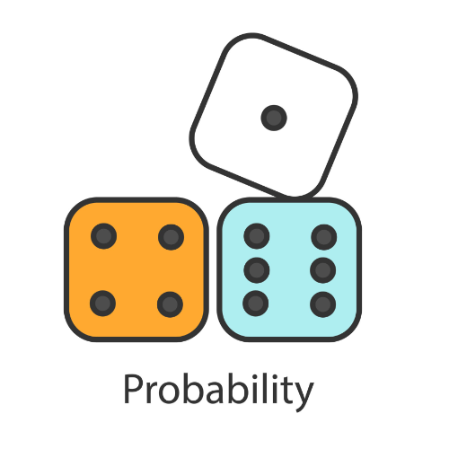

Κατηγορίες μαθημάτων
Πιθανότητες
- Εισαγωγή στις Πιθανότητες
- Εντροπία πληροφοριών
- Ξένα Ενδεχόμενα
- Ανεξάρτητα Ενδεχόμενα
Βάσεις Δεδομένων
- Συστήματα Διαχείρισης Βάσεων Δεδομένων
- Σχεσιακή Άλγεβρα
- Βελτιστοποίηση Ερωτημάτων
- Ασφάλεια Βάσεων Δεδομένων
Τεχνητή Νοημοσύνη

- Υπολογιστική Όραση
- Μηχανική Μάθηση
- Νευρωνικά Δίκτυα
- Επεξεργασία Φυσικής Γλώσσας
Δίκτυα Επικοινωνιών
- Φυσικό επίπεδο
- Eπίπεδο σύνδεσης δεδομένων
- Επίπεδο Δικτύου & Πρωτόκολλα
- Επίπεδο Εφαρμογής